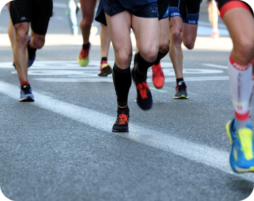

Асфальт
Многие выбирают асфальт, потому что именно он и преобладает в городах. Преимущество в том, что для пробежки ненужно никуда специально ехать: выходим из дома и бежим. Это актуально для тех, у кого время на тренировки строго ограничено. Также асфальт отличается ровностью, что снижает риск травм особенно у новичков. Марафоны проводятся на асфальте, поэтому, если Ваша цель — пробежать именно эту дистанцию, тренироваться лучше на асфальте.
Очевидный минус асфальта — жесткость, которая усиливает нагрузку на суставы. Учитывая это, для бега по асфальту рекомендуется выбирать обувь с амортизирующей подошвой.
